Torque 2D - Shooter Tutorial - Part 7
7. Making it Pretty
At this point, as far as functionality goes, this game is complete. However, since T2D has a really powerful particle system, it would be a shame to let it go to waste. So, this final section deals with adding particle effects to our game and making things look pretty!
First, go into the create tab of the Level Builder and find the Particle Effects rollout (as shown in Figure 7.1.1).
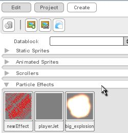
Figure
7.1.1
The really neat thing about the particle effects rollout is that you can preview the effect simply by hovering your mouse over it (as shown in Figure 7.1.2). For our purposes however, we are interested in only two effects. Click and drag the particle effect that looks like a line of fire shooting to the left into the vicinity of your ship.
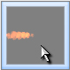
Figure
7.1.2
Once you have that effect dragged out, you will probably notice something that you don't like - as with much of what we have dragged into out level, it is not sized the way we would want (as shown in Figure 7.1.3).
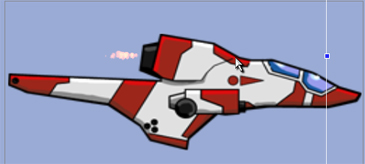
Figure 7.1.3
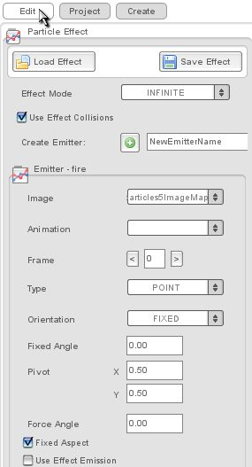
Figure
7.1.4
Inside the particle builder, you can adjust everything about your particles. For now however, we are only interested in one thing - making the particles big enough to look good on our ship.
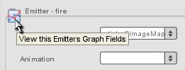
Figure
7.1.5
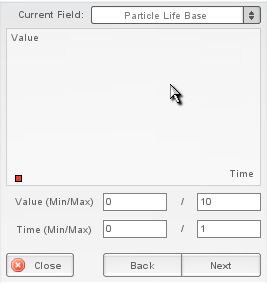
Figure
7.1.6
Right now we are mainly interested in the Size X Life and the Particle Life parameters. To edit those parameters, click on the Current Field dropdown and find the Size X Life option (as shown in Figure 7.1.7).
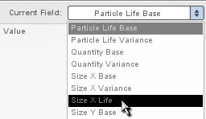
Figure
7.1.7
After you have it selected, you should see its value in the Graph View. In the graph view, you can alter point values, add points, and take them away. To alter a point's value, simply click on the point and drag it up or down. To add points, simply click on any area in the graph. The particle builder will automatically connect the point to the rest of the graph points. To remove a point, you can right click the point. Also, to make it more convenient for Mac users, you can double click a point to remove it. As you change the points on the graph, the particle effect on the screen should update automatically. Mess around with the graph points until you get a look you are happy with.
Repeat the same process with the Particle Life Base property until you get a thruster you are happy with (as shown in Figure 7.1.8).
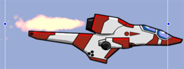
Figure
7.1.8
Also, if you want to save this particle effect as a custom effect to use over and over, go to the settings tab and click the save button (as shown in Figure 7.1.9).
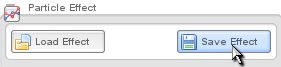
Figure 7.1.9
When you click the save button, you should be shown
this prompt asking you where you want to save it.
Navigate down to your yourProjectName/data/particles folder and give it a name you will remember and click on the Save File button. Make sure you don't save over the original copy of the particle you were editing - it will save you a world of headaches later.
After
you are happy with the results of your particle editing, it is time
to mount it to the player. Add a mount point to the ship and then mount the
effect to that point.
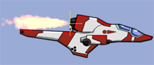
Once you have your particle effect mounted, test out your ship in the level!
Now that we have an engine fire for our player ship, let's add a cool explosion that triggers when the player and enemies blow up. To do this requires some reworking of our code, so save your T2D project and close out of it.
When you have your T2D closed, navigate to your yourProjectName/gameScripts folder and open up your player.cs file. In this file we will be adding some code to our explode() function.
Here was our old explode function:
function playerShip::explode(%this)
{
%this.isdead = true;
%this.setEnabled(false);
%this.schedule(2000, "spawn");
}
Code Sample 7.2.1
Here is what our new explode function should look like (the new code is bolded):
function playerShip::explode(%this)
{
%this.isdead = true;
%explosion = new t2dParticleEffect()
{
scenegraph = %this.scenegraph;
};
%explosion.loadEffect("~/data/particles/big_explosion.eff");
%explosion.setEffectLifeMode("KILL", 1);
%explosion.setPosition(%this.getPosition());
%explosion.playEffect();
%this.setEnabled(false);
%this.schedule(2000, "spawn");
}
Code Sample 7.2.2
As you can see, we have loaded the big_explosion particle effect into the function so that when it is triggered it will play the effect. We have set it to run once and then kill itself so we don't have it running forever. Also, we set its position to the position of the object that called it. After you get this new code in, you should save your file and open up your enemy.cs file.
Inside your enemy.cs file, you should change your explode function to mirror mine below (new code is bolded):
function enemyShip::explode(%this)
{
%explosion = new t2dParticleEffect()
{
scenegraph = %this.scenegraph;
};
%explosion.loadEffect("~/data/particles/big_explosion.eff");
%explosion.setEffectLifeMode("KILL", 1);
%explosion.setPosition(%this.getPosition());
%explosion.playEffect();
%this.spawn();
}
Code Sample 7.2.3
You will notice that we did the same thing to our enemy as we did to our player. Once you have this code in your file, save it and reload your project in the Level Builder.
Once you have reloaded your level in the Level Builder, test it out and see how your new particle effects work (as shown in Figure 7.2.1)!!
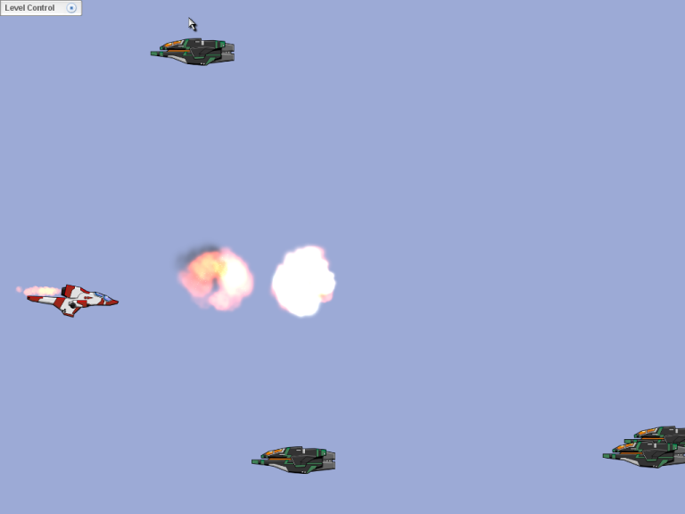
Figure
7.2.1
|
***NOTE*** As with your player's engine jet, your explosion particle effect may be too small. So, if this is the case, you should go back to the part in the tutorial that explained how to get your particle effects to look right and play around with it until you get the look you want. This is really where creativity can pay off with a really good looking explosion - I cannot encourage you enough to play around and see what you can do! Also - if you decide to create a custom explosion particle effect, when you save it out, don't forget to go back into the explode functions of your player and enemy and change the file path of: %explosion.loadEffect("~/data/particles/big_explosion.eff"); to reflect the final name you gave your particle effect. Good luck!! |
Finally, you may notice that your jet still renders when you get hit (as shown in Figure 7.2.2):
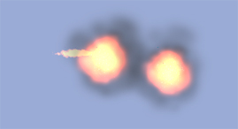
Figure
7.2.2
Thankfully, as with MOST things in T2D, this can be fixed easily. Go into the Level Builder and click on the flaming jet particle. When you have it selected click on the edit tab.
Collapse the particle builder and look for the Mounting rollout (as shown in Figure 7.2.3):
|
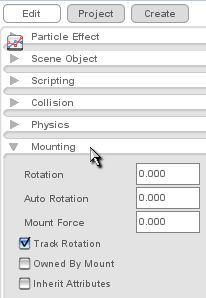 |
When you have it opened, check the Owned by Mount and Inherit Attributes Checkboxes (as shown in Figure 7.2.4). 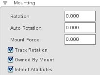 This will make your particles disappear when you do and reappear when you do as well. After you have that completed, save your progress, and enjoy the final version of your game! |
Alright, then… we did it! Now you know how to create a simple game in T2D, in practically no time at all! As you have gone through this tutorial, I hope you appreciated how simple the Level Builder made a lot of our tasks. Most of all, we hope that you now have a very solid idea of just how powerful T2D is and how quickly you can create cool games with it.
If you want more documentation, please check out the TDN wiki, as it should provide a great deal of additional documentation resources. Or, if you prefer, just dig straight into the source code. It’s pretty well commented, simply structured, and easy to get a grasp on. Also, you can look at the script files used to create the T2D demos for nice examples of how to build things in the engine. In fact, looking at the code in this tutorial versus the code in the T2D scroller demo will help you get a feel for what other kinds of code you need to begin writing for more advanced situations. Again, you can think of these demos as mini-"Starter Kits", giving you a leg up on creating particular kinds of games.
We’ll have many, many more docs rolling out over time here, so keep your eyes out for them.
Thanks for reading, and we hope you enjoy T2D! Please stop on by the forums or the community site at any time, where you can sign up for T2D announcements. We really, really want to hear from you on T2D, so please get involved in the community somehow. Working together, we can make the best 2D game tool around even better!